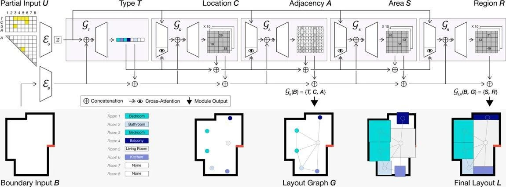
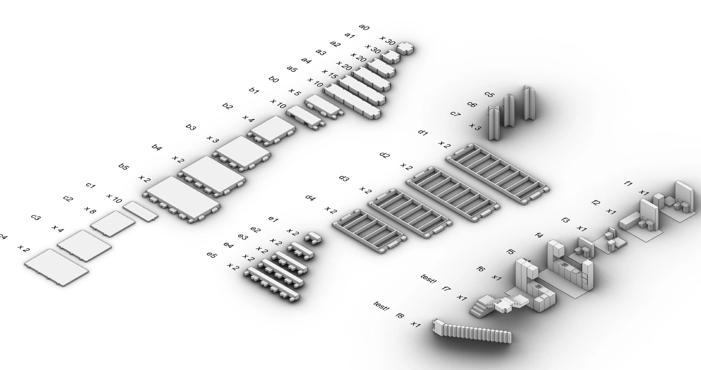
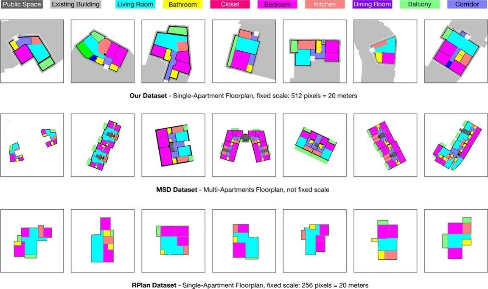
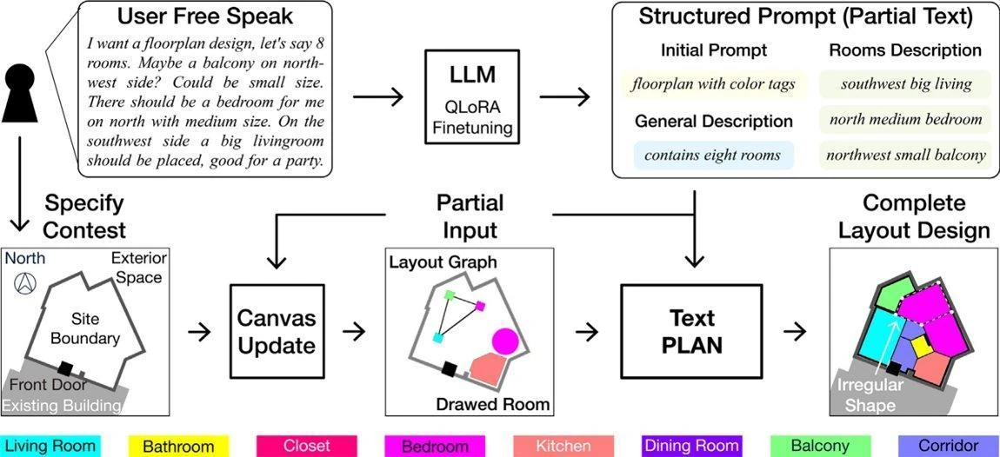
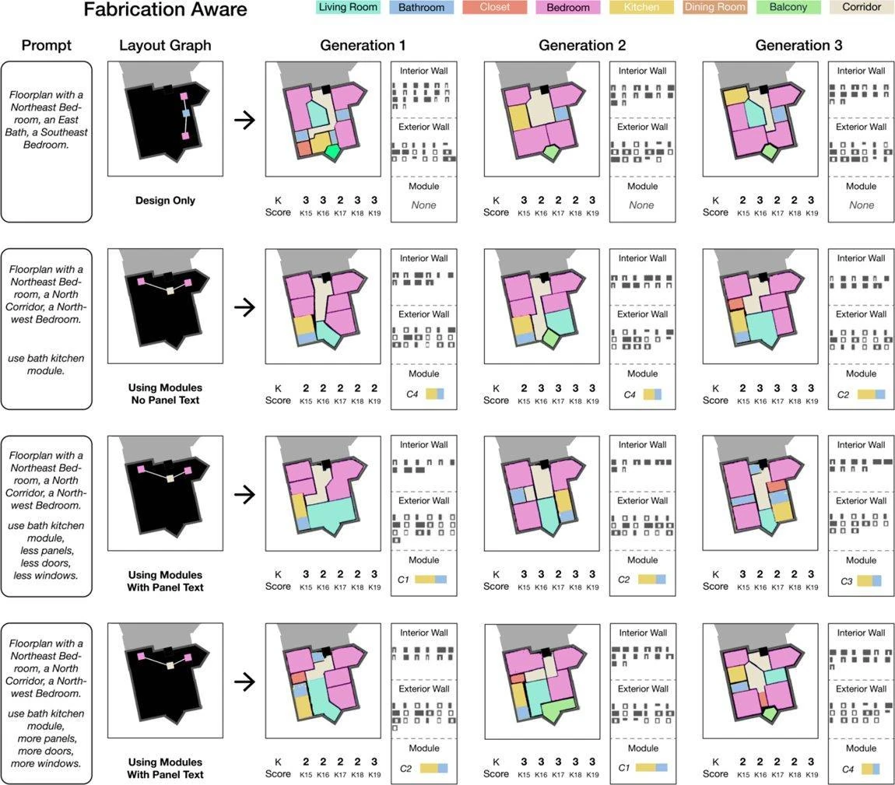
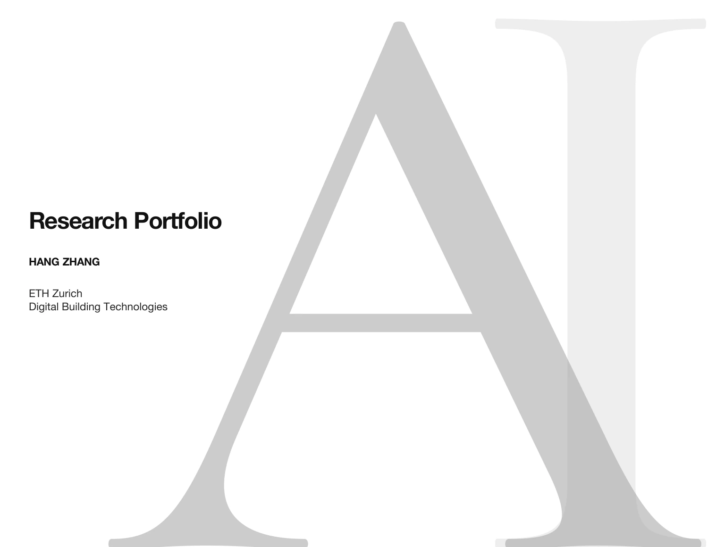
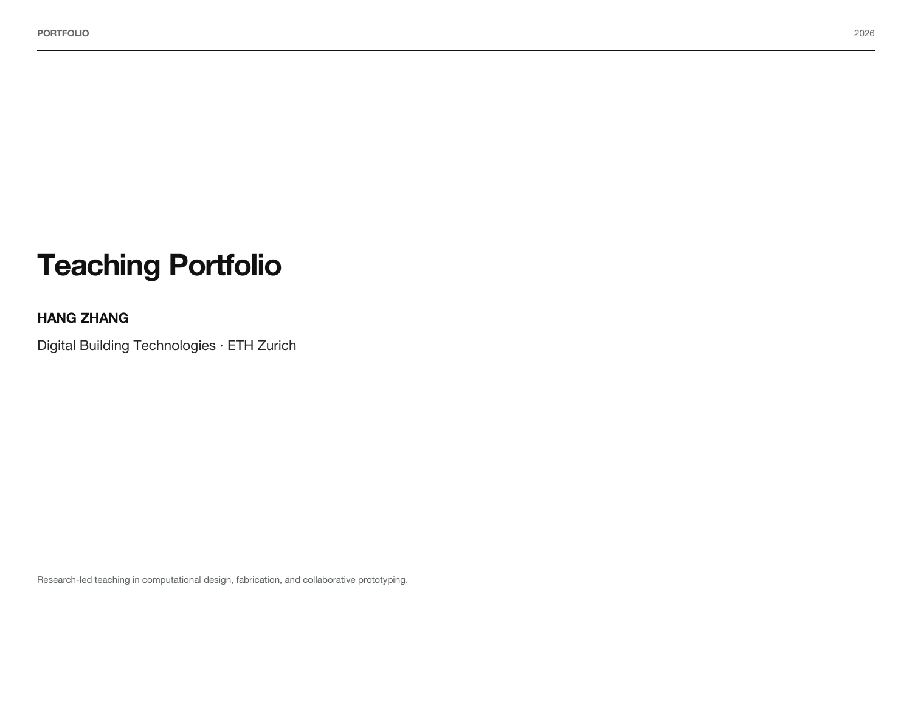
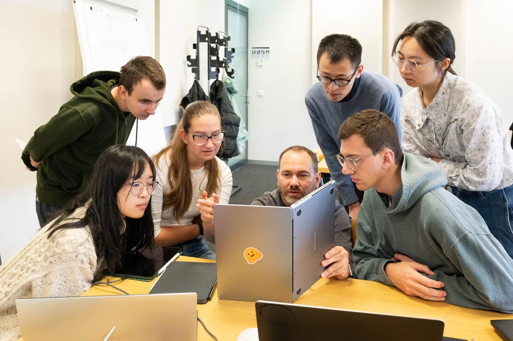
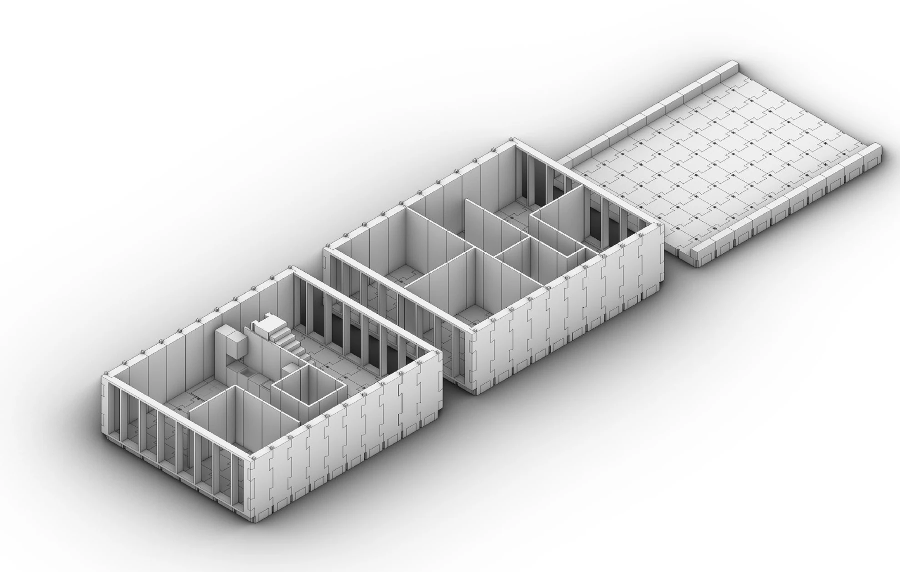

MaskPLAN
Design can start anywhere.
Complete a floorplan from partial room attributes, then add, edit or freeze decisions as the design develops.

Architecture · Artificial intelligence · Fabrication

I develop AI methods that connect architectural intent, iterative design and the logic of making.
Explore the portfoliosDigital Building Technologies
ETH Zurich
01 / Approach
My research explores how generative models can support architectural decisions while keeping designers in control. Language, sketches and partial layouts become starting points for an iterative exchange.
I connect these systems to fabrication and teaching, making design constraints, material consequences and alternative choices available for discussion.
02 / Selected research
Design can start anywhere.
Complete a floorplan from partial room attributes, then add, edit or freeze decisions as the design develops.

One plan, two representations.
Combine vector and image representations to generate apartment layouts under irregular boundaries and partial input.

Language joins the design process.
Bring natural language, graphs and sketches into a shared workflow for multimodal floorplan generation and revision.

Making enters the conversation.
Investigate fabrication-aware generation for hospital wet-core layouts, connecting spatial choices to modular construction.

03 / Portfolios
Two perspectives on a shared practice.
Available to read online or download.

Read portfolioArchitectural AI, interactive layout generation, fabrication and design exploration.

Read portfolioWorkshops, thesis supervision and computational design teaching through making and critique.

Learning through making
My teaching connects computational tools to architectural questions. Students test how data, constraints and material logic shape decisions through workshops, modeling, prototyping and critique.
Explore the teaching portfolio04 / Research in motion
Generative design, interaction
and fabrication, brought together.

The complete film will appear here.
Preview image: TOP-UP assembly study, from the Teaching Portfolio.